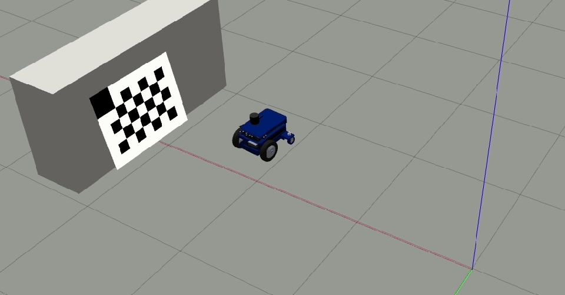

Motion Camera Calibration
Motion Camera Calibration (MCC) is a tool that allows the roboticist to perform a camera calibration by moving the vehicle to which the camera is mounted. Based on the design of the relative vehicle trajectory, the rotation angles can be estimated without prior knowledge of the absolute positions with respect to the checkerboard.
This is particularly useful when the final mounting position of the camera is not predetermined and the camera must be moved to different positions and angles between tests.
The application uses the images captured by the camera while the vehicle is moving to determine the 3 rotation parameters of the camera’s extrinsic calibration.
Prerequisites:
The O3R camera mounted on the vehicle.
The vehicle can travel in a straight line in the negative X direction (backwards movement).
A lapop connected to the VPU of the O3R camera: used to trigger the respective commands for each step of the calibration
Measurements of the translations of the camera head (
transX,transY, andtransZof theextrinsicHeadToUserproperties). This can be measured manually, or derived from CAD. Note that the camera positions are relative to the center of the rear face of the camera head (see scale drawings on ifm.com).The MCC software package. Currently, this is available upon request from support.robotics@ifm.com.
A printed calibration checkerboard (exact size: 800 mm by 600 mm) resting on the floor or at a height so that it is in the field of view of the camera being calibrated. Please find the checkerboard in PDF format
here
Installation
We recommend installing the MCC tool to a fresh Python3 virtual environment to minimize the risk of conflicting versions of dependent Python libraries.
Create a new virtual environment:
python3 -m venv venv
Install the requirements: The required
requirements_MCC.txtfile can be found in the GH repository underODS/ExtrinsicCalibration/MCCsource ./venv/bin/activate python3 -m pip -r requirements_MCC.txt
Install the MCC tool: request the download link via email from: from support.robotics@ifm.com
Start the MCC tool:
o3r-extr-calib-camera
Tool Description
The MCC application window has 2 parts.
On the left side, you can:
Configure:
The ports
The modes
The cell size of the checkerboard
The translation parameters
Start backward motion / stop backward motion
Clear and restart the calibration process
Save / load the data file
On the right side, you have two windows:
Left window: shows the live stream of the camera,
Right window: shows the last image that is used for calibration.
You can calibrate only one camera at a time; therefore select the camera port in the application window which you wish to calibrate.
Procedure
Place the target horizontally (if the camera head is mounted horizontally) or vertically (if the camera is mounted vertically) such that the reference corner (bigger cell) is up.
Type in the camera translations.
Move the camera closer to the target such that the target is large in the live image: it should at least fill 50% of the image.
Once the checkerboard is detected, the corners will become green indicating that you can start the backward motion.
Click
Start backward motionand move the robot backward in a straight line.Once you clicked the
start backward motionall other options will be greyed out exceptClear and RestartThe minimum movement range should be
50 cm(If you moved the robot less than 50 cm then the calibration will not be successful)

The calibration tool will automatically save the frames to a file in the background while you move the robot (camera).
Once the calibration tool captures the required number of frames, the
Stop backward motionbutton will be enabled again and can be clicked by the user to terminate this step.Note
During the procedure, if you feel you did anything wrong or didn’t move the camera in a straight line click
Clear and Restartto restart the calibration procedure.Move the robot orthogonal to the backward motion line and close to the target (fill at least 50% of the image) such that the tool detects all corners of the checkerboard target.
The orthogonal offset should be a minimum of 40 cm.

Click
Add single image (1/2)to add this image to the calibration data file. After clicking the button once, it changes toAdd single image (2/2)which means the first offset position was successful.Move the camera to the other side of the backward motion line and ensure all the checkerboard corners are detected.
Click
Add single image (2/2).Click
Calibrateto perform calibration and output the results.The calibration status and parameters will be displayed at the top of the application window.
Optional Steps
Manually save the calibration parameters output (values) to a file for further reference.
Save the image data file by clicking on the
Save h5 filebutton, this is a handy file to send back to ifm development team for debugging.
{kind=link}
Troubleshooting
The calibration might not be successful due to the following reasons:
Backward motion is not in a straight line.
If the backward motion path is too short. The minimum path length is 0.4 meters.
Due to low signal levels in the images. In this case, try calibrating using
activeIlluminationmode.If the target is too small in the images. Try to move closer to the checkerboard target.
If the single images are too close to each other. The offset between the positions of two single images should be at least 0.50 meters.
If the distance between a single image and the motion path is less than 0.25 meters.